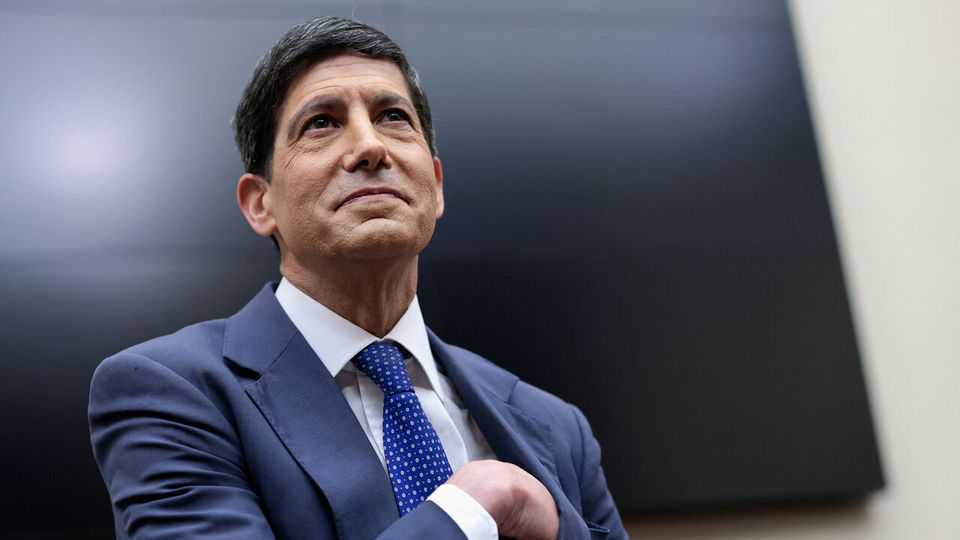

Can Kevin Warsh’s Fed force 5 reimagine monetary policymaking?
The new chairman enlists heavy-hitters to fight a handful of gnarly problems
July 16th 2026

FEDERAL RESERVE chairs like to leave a mark. Ben Bernanke, in charge during the global financial crisis of 2007-09, ushered in a formal inflation target and changed how the Fed talked to the world by making its deliberations less opaque. In 2015 his successor, Janet Yellen, raised interest rates after seven years near zero. Jerome Powell, who came next, launched the Fed’s first comprehensive review of its monetary-policy framework.
Kevin Warsh, the new chair, also has big ideas. One is to limit how much of its internal deliberations the Fed reveals, on the grounds that public pronouncements subsequently may make it harder for policymakers to revise their views. Another is to subject the Fed to more open external scrutiny. To that less controversial end, on July 9th Mr Warsh announced the formation of five task-forces which will review critical areas of monetary policy.
Such brains trusts are not a new idea. In 2014 Mr Warsh, who served as a Fed governor in the financial crisis, was himself invited by the Bank of England to join one reviewing its communication practices. But whereas his predecessors at the Fed have always listened to leading figures in academic economics, business and finance behind closed doors, Mr Warsh has handed them a microphone.
Each task-force is led by a trio of notables. The one looking at how the Fed communicates includes two former central-bank presidents (from Brazil and Britain). A fellow ex-head (from India) co-chairs the team examining the Fed’s bloated balance-sheet. The former boss of Walmart, America’s biggest supermarket, will help run the group investigating alternative data sources. The group exploring the impact of artificial intelligence on jobs and productivity is co-led by an eminent Stanford University economist on secondment to Anthropic, a top AI lab, an even more eminent Silicon Valley venture capitalist and a Microsoft executive. A Nobel prizewinner is among the trio leading the task-force on understanding the causes of inflation.
These heavy-hitters will, with the help of Fed staffers, cobble together policy recommendations and present these first to the Fed board and then to the public. If things go smoothly, all this will happen by the end of the year.
Going smoothly will, first of all, require reconciling the co-chairs’ often divergent opinions in their areas of expertise. Consider the team tasked with reviewing how the Fed thinks about inflation. Thomas Sargeant of New York University, who won the Nobel prize in 2011 for empirical work on cause and effect in the macroeconomy, is an unabashed fan of inflation targets. William White of the C.D. Howe Institute, a Canadian think-tank, is an equally staunch critic, arguing that targets have played a role in making the world more indebted and exacerbated financial boom-bust cycles. Greg Mankiw of Harvard University, who headed the Council of Economic Advisers under President George W. Bush, is in favour of targets but against spuriously precise ones like the Fed’s 2.0%.
Sparks may likewise fly in the other teams. The possible exception is the one concerned with AI. All its members are, like Mr Warsh, bullish on the technology’s transformative potential, differing only in the degree of bullishness (from the gung-ho venture capitalist, Marc Andreessen, to the more guarded Asha Sharma of Microsoft and Chad Jones, a respected academic economist). Each also has an interest in promoting an optimistic outlook, given their ties to the tech industry.
They must nevertheless, like their opposite numbers on the other teams, persuade the Fed to take their recommendations seriously—the second prerequisite for the smooth completion of Mr Warsh’s effort. In most cases, notably on the Fed’s balance-sheet and inflation targeting, the conclusions would need the consent of the Fed board or the Federal Open Markets Committee (FOMC), on which Mr Warsh has just one vote out of seven and 12, respectively, to become policy.
Mr Bernanke famously spent hours discussing proposed changes to which economic forecasts the Fed would publicise, and sought a thumbs-up even from the FOMC’s handful of non-voting members. Given this culture of collegiality, Mr Warsh will have to build consensus around the five sets of conclusions. He will also need to decide how to communicate those conclusions to the world.■
For more expert analysis of the biggest stories in economics, finance and markets, sign up to Money Talks, our weekly subscriber-only newsletter.